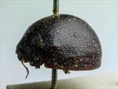
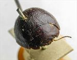
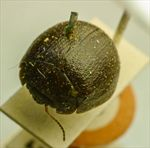
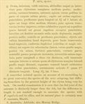

Click on images to enlarge
{kind=link}

Fig. 1. Paropsis alta type specimen, lateral view
{kind=link}

Fig. 2. Paropsis alta type specimen, anterior view
{kind=link}

Fig. 3. Paropsis alta type specimen, oblique view
{kind=link}

Fig. 4. Paropsis alta, description
Name
Paropsis alta Blackburn, 1896
Corresponds to
This is very likely the same species as Ta116 (and Ta177, which may be conspecific), see discussion under 'Diagnosis and Notes'.
Diagnosis and Notes
Blackburn (1896), deals with T. alta as part of his 'subgroup iii' (i.e., those species without "strongly marked characters", whose greatest height is not or scarcely in front of the middle of the elytral margin and whose elytra are not depressed under the humeral callus). Within that group, he characterises it as:
AA. No postbasal impression on disc of elytra;
B. Elytral verrucae concolorous with or darker than general surface;
C. puncturation of prothorax more or less close and at most moderately strong;
DD. Seriate arrangement of elytral verrucae and especially the punctures scarcely evident;
E. Elytra exceptionally finely punctulate;
F. Form exceptionally wide, elytra by measurement wider than long.
There are at least three species in this group of strongly convex species that are possible candidates for being conspecific with the type of T. alta - Ta116, Ta123 and Ta107. A strong candidate is Ta116 , with its uniform colour, very convex shape and strongly punctate scutellum. The type is 7.35 mm in length and has an A-A separation of 1.32 mm, giving an A-A/BL value of 0.173. This is around the size expected for a specimen of Ta116 of that size and is well above the value (<0.16) expected for an individual of Ta123, the species most likely to be confused with Ta116, but is in the same range as Ta107. At the time the type was examined, the presence of the very fine lines of a paler shade on the elytra of Ta123 and many specimens of Ta116 was not known about, and therefore not looked for. Images of the type do not show such lines, though this cannot be considered definitive as the images are of rather poor quality. [cf. also with the Western Australian Ta177].
Blackburn mentions two other character pertaining to T. alta: the 3rd joint of the antennae is distinctly longer than the 4th, and the greatest height of the insect is “very far back”. Neither of these is true for many specimens of Ta116 (or Ta123 and Ta107). In all of these species the 3rd and 4th antennomeres are roughly equal in length (with some specimens having the 3rd slightly longer than the 4th, and vice versa), while the position of the highest point in the specimens examined of all three species is quite variable. Most have the highest point a little in front of the middle of the elytral margin, but in a few (especially females) it is situated considerably further back. It is of course entirely possible that T. alta is another species in the alta species group that is currently unknown to the author.
Type specimen
Location: BMNH
Label data: /“Type” (red-bordered circle)/ “6187 S.A. T”/ “789”/ “Blackburn coll. 1910-236.”/ “Paropsis alta Blackb.”/.
Female; Size: 7.35 (L) x 6.05 (W) x 4.1 (H) mm; A-A: 1.32 mm; HCE = ~25.5% BL (estimate from a photo of an approximately lateral view).
A very rounded and almost uniformly brown specimen, no verrucae but elytral surface has broad and slightly irregular interstices so that punctures appear quite small and indistinct. Trochanters all with a single seta.
Original description
[Original description shown in figure, translated from Latin using ChatGPT, 04/2026]
♀. Ovate, very broad; very convex, of greater height (in lateral view), with the highest point placed behind the middle of the elytral margin; moderately shiny; chestnut-brown, the antennae toward the apex, the legs in part, and the underside of the body pitchy. Head fairly closely rugulose-punctulate. Pronotum broader than long as about 2¾ to 1, from the apex fairly long broadened beyond the middle, behind the apex lightly transversely impressed, closely somewhat strongly and rather roughly fairly evenly (except the lateral part fairly coarsely rugulose) punctulate; sides fairly strongly rounded, not at all flattened; posterior angles absent. Scutellum punctulate as the pronotum. Elytra not depressed below the humeral callus, behind the base not transversely impressed, closely doubly (more finely and more coarsely) rather roughly, scarcely somewhat in rows (toward the sides a little more, posteriorly scarcely less, strongly) punctulate; with some small, not very distinct verrucae; interspaces less rugulose; marginal part scarcely distinct from the disc; the inner margin of the humeral callus slightly more distant from the suture than from the lateral margin of the elytra; basal ventral segment somewhat strongly, not very closely punctate; third antennal segment distinctly longer than the fourth. Length 3½ lines [~7.4 mm]; width 3 lines [~6.4 mm].
References
Blackburn, T. 1896, "Revision of the genus Paropsis. Part I", Proceedings of the Linnean Society of New South Wales, vol. 21, no. 4, 637-693 (page 688).
Copyright © 2026. All rights reserved.